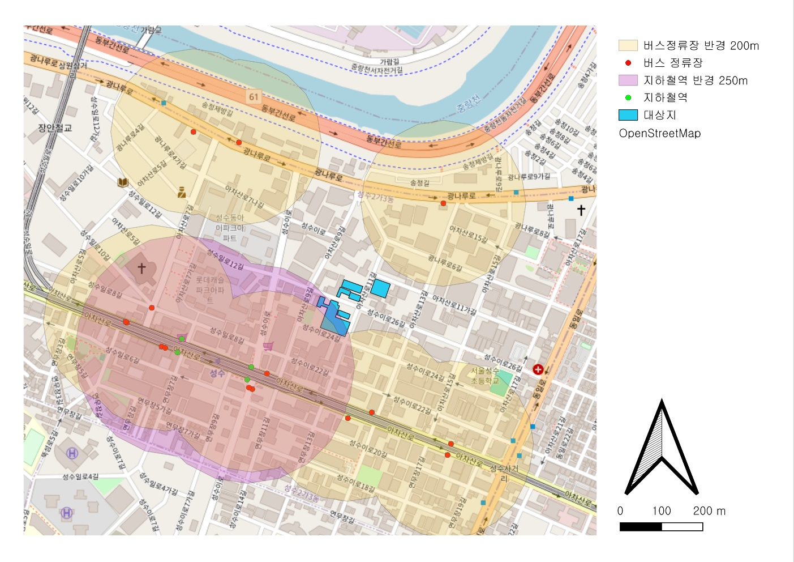
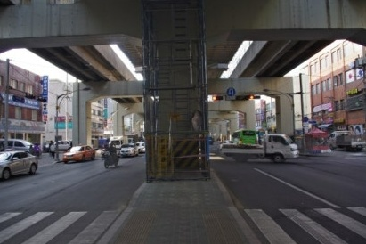
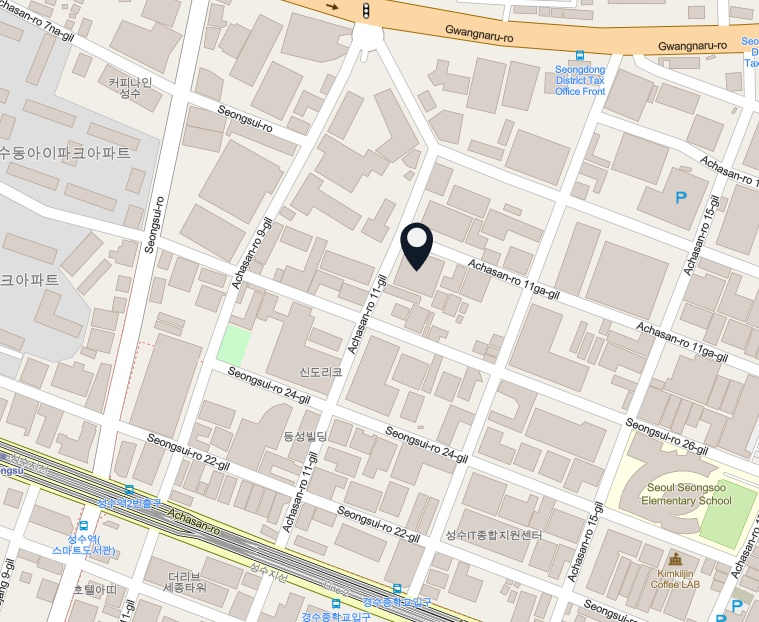
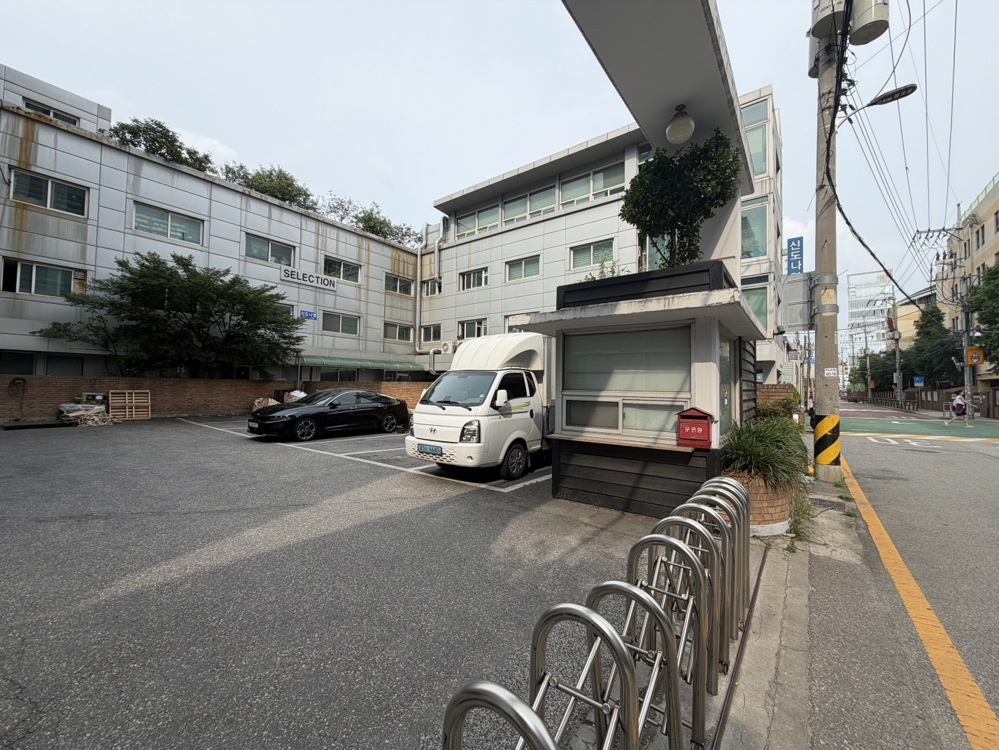
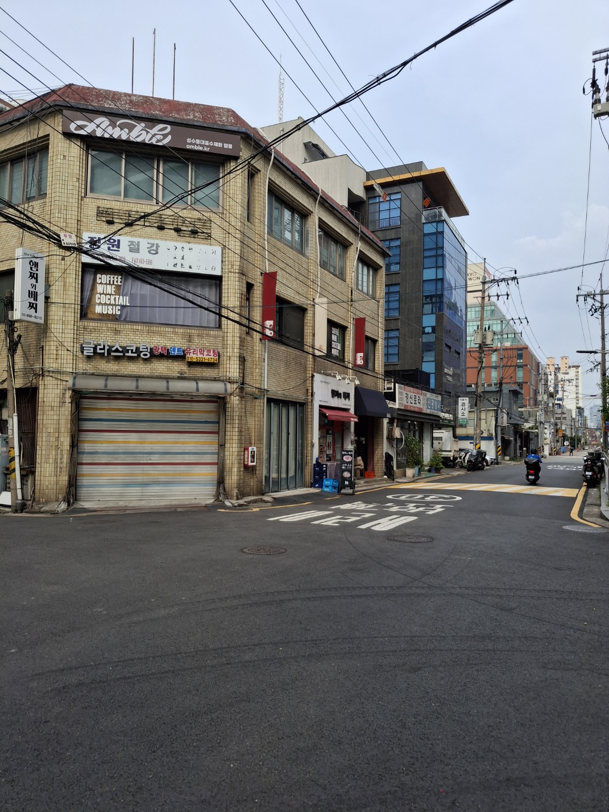
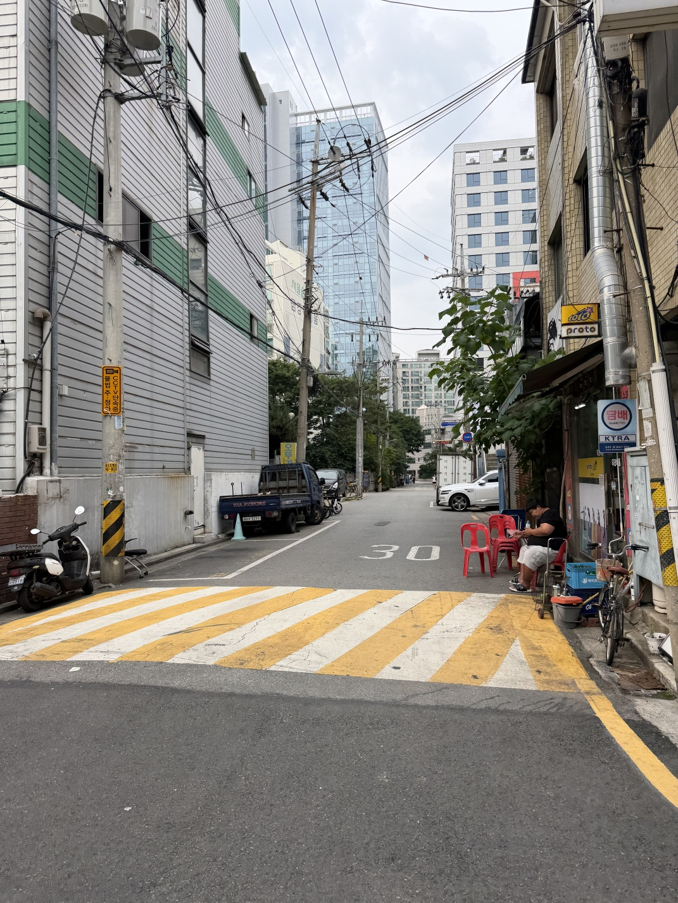

독보적인 산업 생태계
기획, 디자인, 출력, 후가공까지 전 공정이 반경 500m 이내에 긴밀한 물리적 네트워크로 집적되어 있는 살아있는 준공업 도심 제조 유산입니다.
SITE STATUS
성수동 북측 인쇄 단지가 지닌 독특한 공간 구조와 골목 환경을 종합적으로 진단합니다.

아이돌·캐릭터 굿즈, 아크릴 키링, 스티커, 스마트폰 케이스 등 MZ세대 기업이 타깃인 커스텀 상품 제조. 모양대로 칼선을 따주는 '도송(톰슨) 공정'과 UV 인쇄의 독보적 기술력을 보유합니다.
전통적인 대량 인쇄(오프셋) 방식을 벗어나, 데이터만 있으면 1장의 인쇄물도 즉시 생산 가능한 시스템 구축. 명함, 리플렛, 포스터 등 비즈니스 인쇄물 초고속 맞춤 생산이 가능합니다.
자체 웹사이트뿐만 아니라 다양한 커머스 플랫폼과 API를 연동하여 주문부터 배송까지 자동화된 공정 제공. 주문 접수 → 자동 검수 → 스마트 생산 → 자동 분류 → 배송 출고 → 방문 수령.
SELECTION REASON
성수2가 1동 및 성수동 북측 준공업지역 일대는 성수동의 중심부와 상업지구 이면에 숨겨진 가장 밀도 높은 독자적 산업 공간입니다.

기획, 디자인, 출력, 후가공까지 전 공정이 반경 500m 이내에 긴밀한 물리적 네트워크로 집적되어 있는 살아있는 준공업 도심 제조 유산입니다.

성수역 남측 연무장길이나 카페거리의 급격한 상업화 흐름과 대조적으로, 북측 블록은 물리적·인지적으로 고립되어 있어 재생이 시급합니다.

낮은 스카이라인과 옛 격자형 골목 조직을 원형 그대로 유지하고 있어, 필로티와 닫힌 공장 전면부를 조정하면 매력적인 문화적 보행 통로로 전환 가능합니다.
INDUSTRIAL GEOGRAPHY
성수동 북측 인쇄지구 일대의 용도 분포, 사업체 밀집도, 유동 동선을 다각도로 중첩 분석한 인구·산업 지리 정보 레이어입니다. 좌측의 제안 장치를 클릭하여 입체적으로 비교 분석해 보세요.


SITE PROBLEMS
성수동 북측 인쇄 단지가 직면한 구조적·환경적 주요 한계점들을 정밀 분석합니다.


